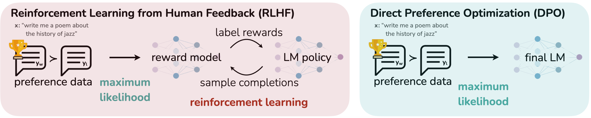

DPO 补充解读：一个分类损失为什么能改变生成模型¶
DPO 最值得理解的是“奖励可以由策略相对参考模型的变化来表达”；二元分类只是把这种表达接到偏好标签上的训练方式。
它分类的对象不是一句话的真假¶
训练输入是同一问题下两个完整回答。分类器的 logit 由语言模型自身的四个序列 log-prob 构成，没有另接一个判断真假的分类头。训练更新的仍然是下一个 token 的分布，因此最终部署的是正常语言模型，无须携带一个二元分类器。

图中从偏好数据直接连到策略的箭头，背后是最优策略与奖励之间的变量替换。它解释了“语言模型暗中也是奖励模型”这个标题：只有结合固定参考模型计算概率比时，才得到这里定义的隐式奖励；不能把任意一句话的原始概率直接当成人类价值判断。
这个巧妙的消去依赖同一个问题¶
两个回答共享 \(x\)，所以归一化项 \(Z(x)\) 能够消掉。如果把不同问题下的回答随意拼成偏好对，就失去这一条件。多轮数据也要确保比较的上下文确实相同，不能只有最后一句用户文字相同、前面的对话历史不同。
相对胜出与绝对好回答之间还有距离¶
DPO 只需在观察到的回答对上拉开相对差距。若训练对没有覆盖真实部署中的坏答案，模型可能把概率质量转移给其他未被约束的回答。chosen 的概率也不保证单调上升，因此只记录 margin 会漏掉一些退化。这个问题说明离线数据覆盖、生成评测和必要的 SFT 约束为什么仍然重要。
对原论文应保留哪些边界¶
原文的摘要人工胜率、受控情感前沿和分布外新闻实验是不同口径。新闻摘要的 DPO 胜率虽高于 PPO，却仍低于 50%；它证明相对改进，不意味着新闻摘要已超过参考答案。对话部分缺少一个表现可靠且严格匹配的 PPO 对照，也不宜外推为 DPO 在所有场景中胜过 PPO。
更进一步的推导、β、长度与 Python 损失实现见 DPO 精讲。它和 论文精炼版 的区别是：前者讨论如何理解、选择和实现算法，后者忠于该论文的实验与论证。